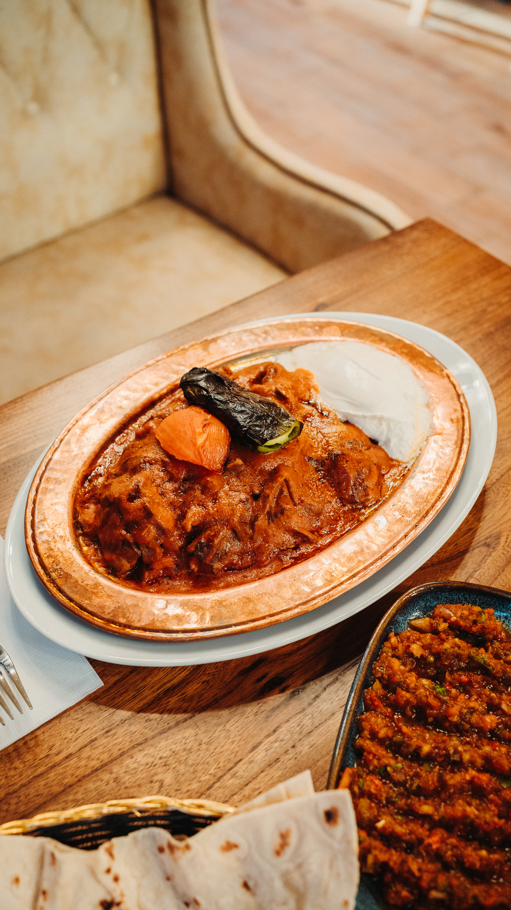
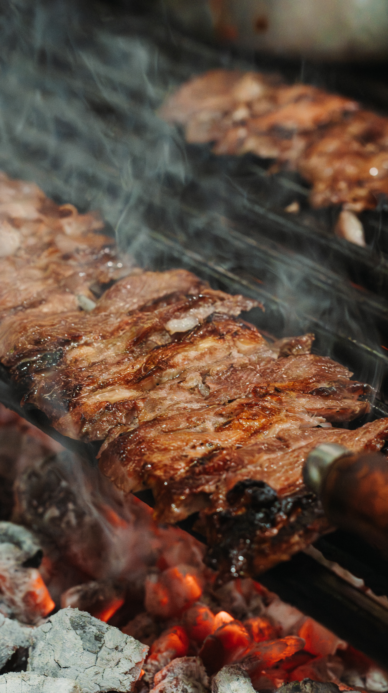
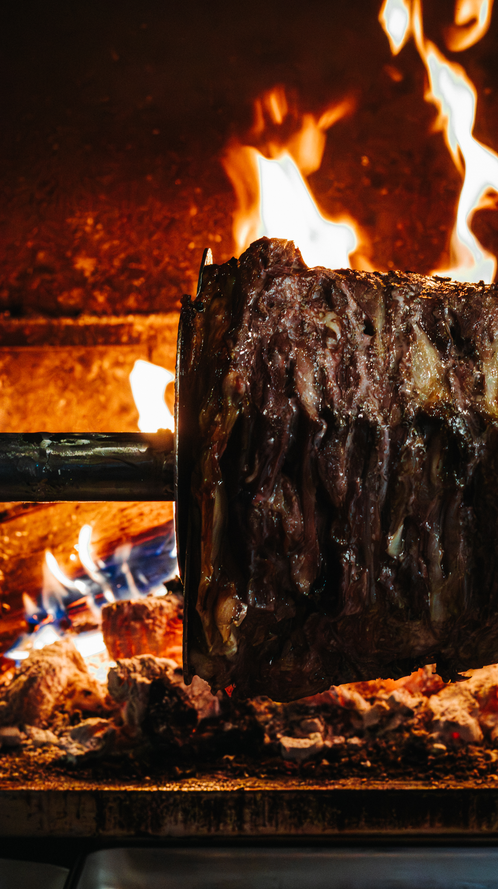

Plates from the line.
Ateşten on beş kare
15 frames · 04 shoots · 2026

The rotation begins.cağ — döner

The flame answers.ateş — fire

Mid-rotation.orta — middle

The roast at rest.dinlenmiş

The blade arrives.bıçak — knife

A short cut.kesim — the cut

Smoke, two registers.duman — smoke

Şiş tavuk on the coals.kömür — coal

Adana, plated.tabak — plate